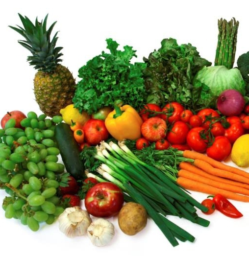
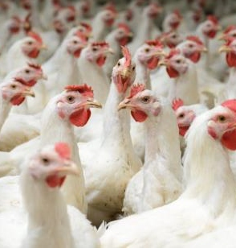
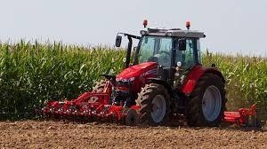
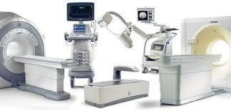
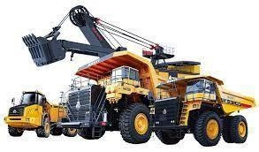

Food Stuffs & Beverages
Food products, beverages, animal products, groceries, consumables, and quality market supply for organizations and catering operations.
Products
Tingon Enterprises Limited sources and supplies practical products for day-to-day operations and larger procurement requirements.

Food products, beverages, animal products, groceries, consumables, and quality market supply for organizations and catering operations.

Eggs, chickens, animal products, and related livestock supply for customers that need reliable sourcing.

Seed, fertilizer, crop products, tools, farm equipment, and support items for agricultural operations.

Health sector equipment, medical devices, diagnostic products, and general clinic or facility supplies.
Files, pens, books, folders, paper products, binders, desk items, and routine office requirements.
Printer cartridges, toners, computer accessories, electronics, and technology support products.

Mining equipment, heavy machinery support, industrial tools, compressors, workwear, and site supplies.
Cleaning equipment, chemicals, tools, and hygiene products for commercial and institutional environments.
Transport-related support for procurement, movement of goods, and operational logistics.